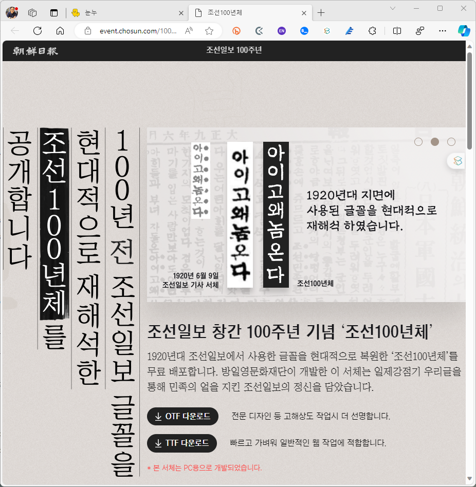

contributor: 임유나
ChatGPT는 글로 뭔가를 남기기 주저될 만큼 지난 1년여에 걸쳐 꾸준히 업그레이드를 해왔습니다.
DALL.E를 품어 그림을 그릴 수 있게 되었고 Data Anaysis(舊 Code Interpreter)를 품어 데이터 분석이 가능합니다.
이들은 별개로 사용할 수도 있지만 함께 활용하면 불가능이 가능으로 바뀝니다.
- 대학(大學)에는 수신제가치국평천하(修身齊家治國平天下)라는 널리 알려진 말이 있습니다.
- 이 앞에 붙는 말은 이보다 덜 알려졌는데, 격물치지성의정심(格物致知誠意正心)입니다.
- 성의정심은 뜻이 성실해진 뒤에 마음이 바르게 된다는 뜻이며
- 격물치지는 사물의 이치를 터득한 뒤에 지식이 지극해진다는 뜻입니다.
- ChatGPT의 여러 기능을 활용하고자 하는 분들이 많지만 개별 기능을 먼저 올바르게 판단해야 합니다.
- DALL.E는 언어와 그림이 함께 임베딩된 CLIP을 바탕으로 한 diffusion model 기반의 이미지 생성 모델입니다.
- 수량이나 길이를 정량적으로 표현하는 데 근본적으로 취약합니다.
- 현재 버전 기준으로 영어는 제법 문장까지 쓰지만 한글은 쓰지 못합니다.
- $y = sin(x)$ 같은 수식, CH4 같은 화학 구조를 제대로 표현하지 못합니다.
- Data Analysis는 코드를 생성해 내부의 서버에서 실행합니다.
- 간단한 딥러닝도 해 주지만 실행 시간이 1분이 넘어가면 자동으로 종료됩니다.
.ttf같은 글꼴,.whl같은 파이썬 라이브러리를 업로드해서 설치해서 사용하라고 할 수 있습니다.- 예술적인 그림은 그리지 못하지만
PIL과opencv를 활용한 이미지 처리는 잘 합니다. - GAN 계열 기술이 필요한 업스케일링은 하지 못합니다. 그렇지만 보간(interpolation)은 합니다.
- 서로 다른 듯 보이는 둘이지만 시너지를 일으킬 수 있습니다.
- 그 중 한글을 못쓰는 DALL.E에게 Data Analysis로 한글과 한자를 써주는 예제를 살펴보겠습니다.
1. 그림 그리기: DALL.E
- 동양화 느낌의 연하장을 만듭니다.
- 달리에게 미니멀리즘 느낌의 수묵화를 그리라고 지시합니다.
- ChatGPT 안에 여러 도구들이 있으므로 “Use DALL.E:” 프롬프트를 사용해 달리를 사용하라고 지시하는 것이 좋습니다.
prompt: “Use DALL.E: draw Korean ink painting style landscape image, sephia tone, minimalism”
- 한국적인 느낌을 너무 기대하면 곤란합니다. 달리는 한국 그림보다 중국과 일본 그림을 훨씬 많이 학습했습니다.
- 그림에 담기는 요소가 풍부할수록 한국화보다 중국화, 일본화 느낌이 많이 나는 경향이 있습니다.
- seed number와 Gen ID가 출력되었습니다. Custom Instructions의 “How would you like ChatGPT to respond?”에 아래 명령을 입력해 두었기 때문입니다.
If image(s) are generated, return the image seed number(s) as well as Gen ID(s).
- 생성된 이미지의 seed number와 Gen ID를 알고 있으면 일관된 이미지를 만들기 편리합니다.
- 영어로 프롬프트를 입력했습니다.
- 달리의 시스템 프롬프트를 열어보면 입력 언어가 영어가 아니면 영어로 번역해서 작업하라는 내용이 있습니다.
- ChatGPT 안에서 한글이 영어로 번역될 때 의도와 다른 단어로 번역되는 경우가 종종 있기 때문에, 처음부터 영어로 입력하는 것이 좋습니다.
2. 글자 쓰기: Data Analysis
2.1. 외부 글꼴 활용
- 방금 작성한 이미지에 글자를 쓰게 합니다.
- Data Analysis에서 이미지를 다루게 하면 파이썬의
PIL라이브러리를 사용합니다. PIL라이브러리로 한글을 쓰려면 글꼴을 제공해야 합니다.- 무료 글꼴을 찾아 사용합니다. 여기서는 조선일보가 제공한 조선100년체를 사용합니다.

- TTF 다운로드를 클릭하면 글꼴이 압축된 .zip파일이 다운됩니다.
- ChatGPT 대화창 왼쪽의 클립 모양 아이콘을 클릭해 글꼴을 업로드하고 이를 사용하도록 지시합니다.
- 위에서 20% 지점에 검은색으로, 가로 방향으로는 중앙 정렬되도록 지시합니다.
- 같은 요령으로 “Use Data Analysis:” 프롬프트를 사용해 도구를 지정합니다.
- 잠시 작업이 끝난 후 다음과 같은 결과물이 출력됩니다.
출력창을 맨 아래로 내리면 [>_] 버튼이 있습니다.
클릭하면 코드가 보이는데, 다음과 같은 코드가 실행되었음을 알 수 있습니다.
코드 보기/접기
1
2
3
4
5
6
7
8
9
10
11
12
13
14
15
16
17
18
19
20
21
22
23
24
25
26
27
28
29
30
31
32
33
34
35
36
37
38
39
40
41
42
43
44from PIL import Image, ImageFont, ImageDraw
import zipfile
import os
# Path to the uploaded image and font file
image_path = '/mnt/data/A_Korean_ink_painting_style_landscape,_showcasing_.png'
font_zip_path = '/mnt/data/ChosunCentennial_ttf.zip'
# Extract the font file from the zip
with zipfile.ZipFile(font_zip_path, 'r') as zip_ref:
zip_ref.extractall('/mnt/data')
# Find the extracted font file (assuming there's only one .ttf file in the zip)
extracted_files = os.listdir('/mnt/data')
font_file = next((file for file in extracted_files if file.endswith('.ttf')), None)
font_path = f'/mnt/data/{font_file}' if font_file else None
# Load the image
image = Image.open(image_path)
# Add text to the image
if font_path:
draw = ImageDraw.Draw(image)
text = "새해 복 많이 받으세요"
font_size = 50 # Starting font size, may need adjustment
font = ImageFont.truetype(font_path, font_size)
# Calculate text size and position
text_width, text_height = draw.textsize(text, font=font)
image_width, image_height = image.size
x = (image_width - text_width) / 2 # Center horizontally
y = image_height * 0.2 # 20% from the top
# Draw text
draw.text((x, y), text, font=font, fill="black")
# Save the modified image
modified_image_path = '/mnt/data/modified_korean_ink_painting.png'
image.save(modified_image_path)
modified_image_path
else:
modified_image_path = None
modified_image_path글꼴이 잘 반영되었습니다.
2.2. 글자 위치 변경
- 글자가 그림과 조금 겹쳤습니다. 살짝 위로 옮기면 좋을 것 같습니다.
- 상단 20% 지점으로 지정된 위치를 상단 10%로 옮깁니다.
- 그냥 옮기라고 말만 하면 되지만, 자칫하면 지금 글자를 놔둔 채 위에 글자를 또 하나 쓰기 때문에 original image를 가지고 작업하라는 말을 하는 것이 안전합니다.
2.3. 한자 입력
- 한글 입력과 완전히 같은 요령으로 하면 됩니다.
- 한자 폰트를 찾아 적절한 것을 골라서 업로드하고 이 폰트를 사용하라고 지시합니다.
- 저는 Li Su medium font를 사용했습니다.
- 그 어떤 언어도 마찬가지 방법으로 사용 가능합니다.
3. 응용
- 같은 요령으로 아래 그림도 그릴 수 있습니다.
- 나눔손글씨 중 나의 아내 손글씨로 작성한, 출근하는 남편에게 싸준 아내의 과일 도시락 설정입니다.
- Data Analysis와 함께 DALL.E와 언어의 장벽을 마음껏 뛰어넘으시길 바랍니다.